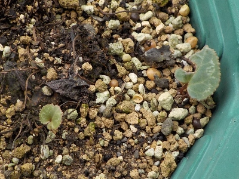
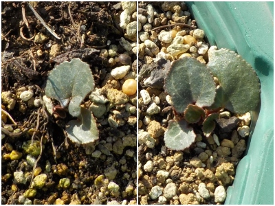
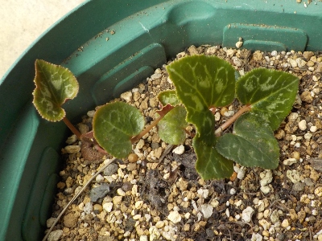

葉っぱ1枚のシクラメンが2株あります。
更新日 : 2025/10/25

10月後半なのでもう過湿で枯れることはないと思いますが、弱々しい小さな葉っぱが一枚しかありません。
2株とも育って欲しいと思いますが、来年の夏にまた枯れるんじゃないかとも思ったりします。
シクラメンは夏越しできないから絶対新しく買わないと決めているんですが、あるものは育てるしかないですね。
これから手間暇かけて育てるつもりです。
更新日 : 2025/10/25

10月後半なのでもう過湿で枯れることはないと思いますが、弱々しい小さな葉っぱが一枚しかありません。
2株とも育って欲しいと思いますが、来年の夏にまた枯れるんじゃないかとも思ったりします。
シクラメンは夏越しできないから絶対新しく買わないと決めているんですが、あるものは育てるしかないですね。
これから手間暇かけて育てるつもりです。
更新日 : 2025/12/31

葉っぱ1枚から2か月経ちました。葉っぱは倍増していますが、まだまだ小さい。
今期は花が見れないかな。まあ今回は枯らさずに育てるのが目的なのでいいかな。
絶滅しないで育てば何の文句もないです。
更新日 : 2026/07/19

まだ小さいな。もうちょっと大きくなっても良かったんじゃないかと思います。
夏の厚さや湿気で枯れないといいけど、今年はどうなるかな。
シクラメンを育てるのはこれが最後になるかもしれない。